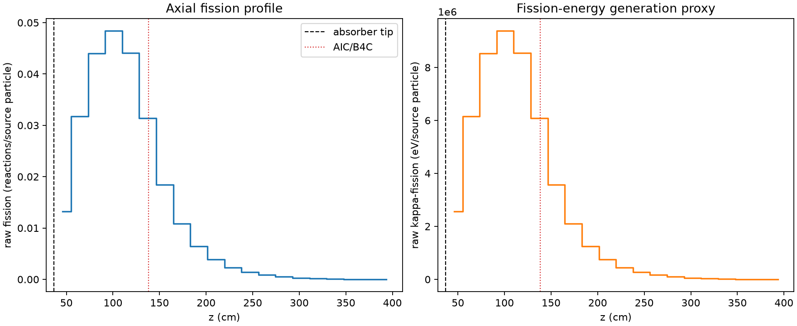
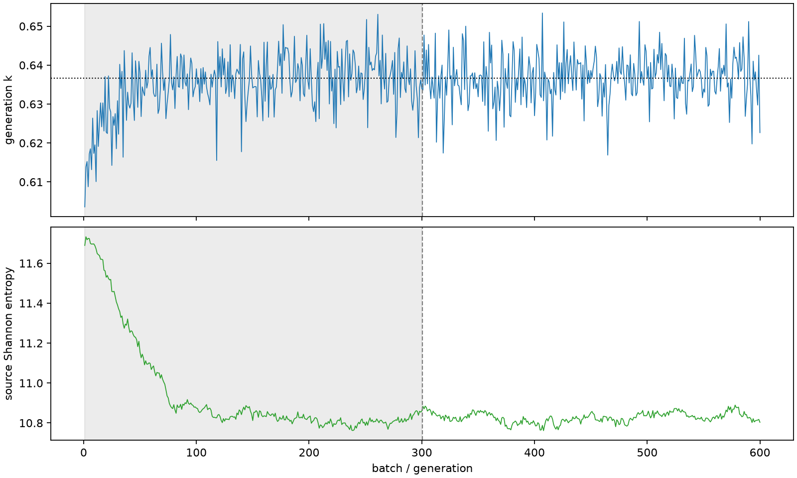

| Alan | Değer |
|---|---|
| Model | beavrs_derived_3d_assembly_v1 |
| Deney | D4-P100 |
| Giriş (%) | 100 |
| Durum | completed |
| Fiziksel kabul | değerlendirilmedi |
| Yakınsama | inceleme gerekli |
| Süre (s) | 253.7452467969997 |
| k ± MC standart hata | 0.636670 ± 0.000285 |
| Kaçak kesri ± MC standart hata | 0.012503 ± 0.000068 |
| Hata |
| Alan | Değer |
|---|---|
| Elementel bor | 975.0 ppm by mass |
| Su yoğunluğu | 0.740582068 g/cm3 |
| Yakıt yoğunluğu | 10.31341 g/cm3 |
| Sıcaklık | 566.483 K |
| threads | 6 |
| generations_per_batch | 1 |
| particles_per_generation | 20000 |
| batches | 600 |
| seed | 45101 |
| inactive | 300 |


Ham alanlar ve standart hatalar fields.npz; fiziksel koordinatlar ve eksen sırası aynı dosyadadır.